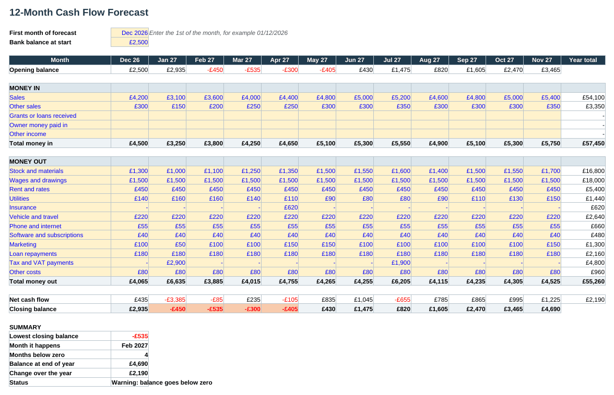

12-Month Cash Flow Forecast
See your bank balance month by month for the next year, and spot a shortfall before it happens.
Buy for £19One-off payment. Excel file (.xlsx), delivered as a download.

What you get
- A 12-month forecast that starts from any month you choose
- Five income rows and twelve cost rows you can rename
- Opening and closing bank balance for every month
- A summary showing your lowest balance and the month it falls in
- Months below zero highlighted in red, plus a balance chart
Who it is for
Sole traders and small firms who want to know whether the money will last, without learning accounting software.
How to use it
- Enter your first month and your bank balance today.
- Type what you expect to come in and go out each month.
- Read the closing balance row and the warning in the summary.
Questions
- Do I need to know accounting?
- No. You enter money in and money out. The file does the adding up.
- Does it handle VAT?
- Enter amounts including VAT and record your VAT payments in the row provided.
- What do I need to open it?
- Microsoft Excel. The file has also been tested in LibreOffice Calc. It contains no macros.
- Are the figures in it real?
- No. Each file comes with example figures to show the format. You type over them.